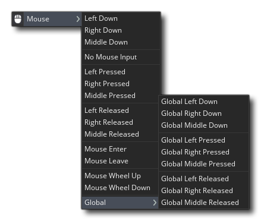
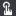
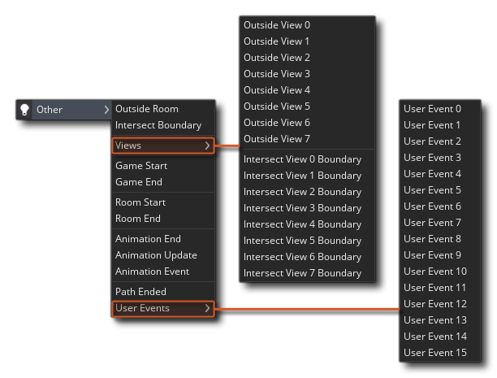
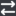

你创建的每个物体都有自己独立的事件列表，这些事件从 物体编辑器 添加到其中。这些事件分为两类：每个游戏步中运行的事件，以及由游戏事件 “触发” 的事件，例如实例到达房间边缘或键盘、鼠标按下。 完整的事件清单如下：

此事件在首次创建物体的实例时发生，并且是在进入房间时通过房间编辑器放置在房间中的实例中发生的第一件事。这意味着此事件是初始化变量、启动 时间轴、设置 路径 等的理想位置......并执行通常只需要执行一次或仅在房间中首次创建实例时执行的任何其他操作。如果你的物体在 物体编辑器 或 房间编辑器 中添加了任何 物体变量 或 实例变量，则 首先 初始化这些变量，然后运行创建事件。
请记住，你可以在房间编辑器中的 实例创建代码 中修改你在创建事件中设置的任何内容，因为这是在实例的创建事件之后直接运行的。

此事件是销毁实例时要执行的事件。在向物体添加行为时经常会忽略它，但它可能非常有用，例如在敌人被杀时创建爆炸或粒子效果，或者在房间的另一部分重新生成物体的新实例，甚至可以在积分上添加积分。
在从房间中删除物体实例的所有事件之后，将调用此事件。因此，如果实例被销毁，房间结束或游戏结束，它将被触发，并且专门用于 “清理” 游戏中可能拥有的动态资源（如表面、数据结构等...），或执行除去实例后需要执行的任务。 请注意，只有在调用所有其他事件后才会调用此事件，因此它将始终是在任何实例中运行的最后一个事件，因为它将在从房间中移除或者房间 / 游戏结束时运行。

计时器事件被分成 12 个子事件，每个事件对应于可在实例中设置的每个可能计时器。因此，当你单击添加计时器按钮时，你将看到此窗口：
在这里，你可以选择要创建的计时器，一旦完成，你将看到它已添加到事件窗口，允许你正常添加代码。但什么是计时器？好吧，这是一个特殊事件，除非先前已经设置了计时器，否则它将一直执行任何操作，然后它会等到该计时器计数到 0 后再运行你添加到其中的操作或代码。一旦计时器达到 0 并运行代码，它将向下计数到 -1，然后保持 -1 不变直到再次设置（这意味着你可以检查计时器的值以查看它是否大于 -1，这将告诉你是否正在运行）。因此，假设你将物体的创建事件中的 alarm[0] 设置为 30，这意味着 GameMaker Studio 2 将在运行置于 alarm[0] 事件中的动作或代码之前倒计时 30 个游戏步。请注意，将计时器设置为 0 将 不会 运行计时器代码，因为事件已触发，但计时器会被设置为 -1，因此将跳过代码。如果需要计时器下一步运行，则应将其设置为 1。
这可能非常有用，因为它允许你在精确的时刻设置运动，甚至可以让它们重复，因为没有什么可以阻止你在自己的事件中设置计时器。想象一下，你有一个怪物，你希望它每三秒钟向右转......好吧，你会在它的创建事件中设置一个计时器为 房间速度 * 3（如果房间速度是 30，那就是每秒 30 步，所以乘以 3 就是 3 秒！）然后在计时器事件中你将有代码或动作设置其方向，以及动作（或代码）再次将其警报设置为 房间速度（room speed） * 30。通过这种方式，你可以设置简单的游戏循环，其中事物只在特定的时间间隔发生。
值得注意的是，其中 没有 动作或代码的计时器 不会运行。但是，即使只是注释而没有代码或操作，计时器也会继续倒计时，并且可以像平常一样进行设置和检查。

GameMaker Studio 2 将时间分割成 步（step），房间速度定义了每秒应该有多少步。一步，是所有事件在游戏运行时被检查和触发的基础循环，所以你可以想到，步事件是一个每步都会被检查和触发一遍的事件。
步事件实际上包含三个子事件，概述如下：
对于大多数事情，标准步事件可以很好地使用，但有时你需要更多地控制运行什么代码以及在什么时间运行，因此为你提供了 步开始（Begin step） 和 步结束（End step） 事件。这三个事件都在每一步都被检查，但是即使未来有对 GameMaker Studio 2 引擎的更新，它们的顺序也永远不会改变，这意味着这是确保某些东西总是在其他东西之前发生的唯一可靠方法。
步事件可以用于什么？好吧，它可以用于需要连续执行的动作或代码。例如，如果一个物体应该跟随另一个物体，在这里你可以调整运动方向朝向我们所遵循的物体，以保持它在后面顺利移动。但要小心这个事件，并且不要在物体的步事件中放置许多复杂的动作，特别是如果你计划在游戏房间中有大量的物体实例，因为这可能会减慢游戏速度。可以将许多内容放入计时器中，或设置为使用某些 其他 事件触发，而不是一直发生。

显然，在制作游戏时，知道物体的两个（或多个）实例是否发生碰撞以及触发碰撞事件是非常重要的。 这是一个放置于一个物体，然后指定对其他物体进行碰撞检查的事件。
如果未启用物理，则将根据两个物体的遮罩（遮罩在精灵属性中定义，或者可以在物体属性中单独分配）以及它们是否重叠来计算这些碰撞。请注意，如果碰撞中的一个或其他实例没有指定遮罩（或者精灵掩码设置为空），即使它正在绘制某些内容，也不会检测到任何碰撞。如果启用了 物理，则碰撞将基于你在物理属性中为物体定义的 碰撞形状（固定装置（Fixture））的类型，以及它对碰撞的反应。这意味着你可能不需要任何代码来处理碰撞，但是此事件 仍然需要至少包含一条注释才能检测到碰撞。
让玩家控制游戏的不同方面非常重要，为此，GameMaker Studio 2 为你提供了一个非常全面的键盘子事件列表，可用于三个主要键盘事件中的任何一个。对于一般键盘事件，只要按下所选键，就会每一步连续触发。
应该注意的是，无论何时使用按键，键盘事件实际上都会在房间中的 所有 活动实例中触发，但只有那些具有为该特定键定义的事件的键盘事件才会响应，你可以在物体和实例中创建多个键盘事件，当游戏运行时，该物体将响应所有按键事件。
向物体添加键盘事件时，将显示键盘子事件菜单，你可以在其中指定要检测的键：
它们大多是相当明显的，但我们打算简述这一部分 - 在我们顶部有方向键，其次是最常用的组合键，然后在键盘的其余部分（分裂成进一步的子部分，这样就可以得到确切需要的按键像
或
）最后两个非常特殊的子事件，无键位和 任意键。正如他们的名字所暗示的那样，这些是子事件，用于检查何时没有按下按键或何时按下任何按键。请注意，数字小键盘上的按键仅在启用 数字锁定（Number Lock） 时产生相应的事件。
键盘的 按下键 和 松开键 事件几乎与常规键盘事件完全相同，除了不是连续触发，它们仅触发 一次。当键盘第一次按下一个键，就会产生一个 按下键 事件（以及常规的键盘事件），在那之后第一时间，当按键不再按下时，它将触发一个 松开键 事件。

鼠标事件被分成一系列子事件，可以选择这些子事件以更精确地控制游戏中发生的事情。 在这里，你可以准确地看到这些子事件是什么： 
左
、右
和中间
按钮事件（无论是正常、按下还是释放）都在具有事件的实例的遮罩上工作。这意味着 GameMaker Studio 2 将检查鼠标在房间中的位置，当这些按钮用于具有鼠标事件的实例的碰撞遮罩时。如果存在 “碰撞”，则将触发事件，因此请确保具有这些事件的任何实例具有带有效遮罩的子画面，或者该物体在物体属性中选择了遮罩。正如它们的名字所暗示的那样，这些事件将在首次按下或释放所选鼠标按钮时触发一次，或者在维持按钮时连续每一步触发。
鼠标移入和移出事件也类似于按钮事件，因为它们也依赖于实例的遮罩来工作，但是它们在鼠标首次 “移入”（触摸）实例或鼠标 “移出“（停止触摸）实例时被触发。然而，这些事件不是连续的，并且每次鼠标进入或离开物体时仅触发一次 - 因此它们是创建例如在鼠标悬停在它们之前需要更改的按钮的理想方法，然后移除鼠标时再返回正常。
最后，我们还有另一个鼠标事件部分，称为 全局鼠标（Global Mouse）。在此子菜单中，你将找到一系列事件，用于在实例中记录鼠标事件，即使鼠标未在其上方或甚至在它们附近也是如此。这些是为所有实例生成的事件，如果有针对指定事件定义的操作或代码，则无论鼠标在游戏房间内的位置如何，都将运行它。
请注意，在移动或触摸屏设备上，鼠标左键
此事件将由用户触摸屏幕（在移动设备上）或单击并移动鼠标（在所有其他平台上）触发。它会检测到以下内容：
点按（taps） - 当用户点击 / 触摸并快速释放时
拖动（drags） - 当用户持续触摸 / 点击它然后移动手指 / 光标
轻抚（flicks） - 当用户移动并在一次移动中释放触摸 / 点击时
捏合（pinches） - 当用户在屏幕上用两个手指然后将它们合拢 / 分开时
旋转（rotates） - 当用户在屏幕上用两个手指然后围绕一个点旋转它们时

不同的事件将始终包含称为 event_data 映射的 映射数据，该映射将包含许多键 / 值对，其中包含触摸 / 点击位置和移动的数据。 有关所有可用子事件及其工作方式的完整详细信息，请参阅以下部分：

在使用 GameMaker Studio 2 制作游戏时，有许多特殊事件可供使用，它们大多在 其他 事件下组合在一起，可以从选择此项时出现的子事件的弹出菜单中选择。 这是所有其他事件的图像： 
当实例离开房间时会触发此事件，并且该事件基于针对实例的指定精灵（及其属性）执行的检查，因此即使你已将图像 x 或 y 比例设置为除 1 以外的值，只有当整个精灵出现在屏幕外时才会触发此事件。如果实例没有精灵，则使用实例的位置，当 x 或 y 位置在房间外时，它也会触发事件。这个事件通常用于像子弹这样的东西，一旦它们离开房间就被摧毁，这样你就不会有数百万个子弹无限飞走而导致你的游戏减速。 请注意，此事件仅在实例最初离开房间时触发一次。
当一个实例 “触碰” 房间的内部边缘时触发此事件，并且像离开房间事件一样，基于对实例的指定精灵（及其属性）进行的检查，这样即使你有 将图像 x 或 y 缩放设置为除 1 以外的值，此事件仍然在精灵的一部分与房间边界相交时触发。 如果实例没有精灵，则使用实例的位置，当 x 或 y 位置与房间边界相交时，它也将触发事件。你可以使用此事件来执行诸如告诉实例再次向房间 “反弹” 而不是离开的事件。
视野通常在房间编辑器中定义，用于在任何时候仅显示大房间的一小块区域。此事件具有自己的子事件列表，该列表分为两个类别（离开视野和相交边界），每个事件对应于八个可用视野和相交边界。 这两个类别的功能与相应的房间事件完全相同，只是将视野的边界作为实例检查而不是房间。
此特殊事件仅在整个游戏中触发一次，并且仅针对在事件中放置操作或代码的那些实例。这些实例必须存在于游戏的第一个房间中，并且已经放置在房间编辑器中，而不是动态创建的。应该注意的是，此事件发生在所有实例的创建事件之后，因此可以包含具有先前在该事件中定义的变量的代码或操作。此事件通常仅在一个 “控制器” 物体中定义，通常用于初始化全局变量，启动音乐，从文件读取以及通常仅在游戏开始时执行一次的任何其他操作。
与上面提到的游戏开始事件类似，此事件仅在整个游戏中触发一次，即在游戏窗口实际关闭之前。同样，对于具有此事件的实例在实际触发事件时，它必须在游戏关闭时在房间中。请注意，此事件实际上仅适用于 Windows、Ubuntu（Linux）和 MacOS 游戏，作为移动设备可能只是关闭游戏而不给 GameMaker Studio 2 提供调用此事件的机会。 对于使用 HTML5 模块制作的浏览器游戏，此事件应在游戏标签或浏览器关闭时起作用，但并非所有浏览器都支持此功能（Firefox、Chrome 和 Safari 在撰写本文时会触发此事件）因此在使用时必须小心。通常，你将使用此事件来保存数据。
当房间开始时，此事件最初发生在房间中的所有实例上。请注意，它发生在创建事件之后，因此可以使用在该事件之前的事件中定义的变量和事物。
此事件发生在房间结束时房间内的所有实例。此事件对于关卡结束后的 “清理” 非常有用，例如，你可以在此处删除已加载的资源，或删除粒子系统以防止内存泄漏等...
在 GameMaker Studio 2 中，精灵不是静态的东西，因为它们可以有子图像并以不同的速度进行动画处理。 动画的每一帧（称为子图像）都有自己的编号，从 0 开始，可以通过代码或甚至通过动作进行检查，但有时你真正需要知道的是动画结束的时间。 当触发此事件时，就在动画结束时，子图像索引显示已到达最后一帧。此事件对于许多事情非常有用，例如爆炸物体，你可以将实例设置为在到达动画的最后一帧时自行销毁。
此事件仅适用于 骨骼动画函数。 这是一个特殊事件，在使用骨骼动画精灵的实例中的每一步触发，并且设计为在为当前动画状态计算骨骼方向之后但在提交此数据之前 “拦截” 骨骼数据用于绘图。 这允许你使用适当的函数修改骨骼数据。
此事件仅适用于 骨骼动画函数。 此事件在具有分配给它的骨骼动画精灵，并且使用 默认 绘制作为指定的精灵，或者通过 draw_self() 绘制精灵的物体中触发。 它目前不会触发任何其他方式绘制的骨架动画精灵。该事件旨在捕获和传输已分配给精灵动画中特定事件的数据，如在用于制作它们的编辑器中定义的那样。
触发动画事件时，将创建一个特殊的 ds_map，称为 event_data 映射（与异步事件的 async_load 映射非常相似）。 此映射将包含以下所有键 / 值对，你可以解析它们以获取有关该事件的信息：
- "name": 事件的名称（在动画程序中定义）
- "track": 动画正在播放的轨道的索引（默认为0）
- "integer": 与事件关联的整数值（在动画程序中定义，默认为0）
- "float": 与事件关联的浮点数值（在动画程序中定义，默认为0.0）
- "string": 与事件关联的字符串（在动画程序中定义，默认为 ""）
路径可以是制作任何游戏的重要部分，无论是用于塔式防御型游戏，还是用于射击游戏或其他任何游戏，并且当一个实例到达路径结束时执行某些特定操作通常非常重要。此事件检测到此事件并在事件发生时触发，允许你添加代码或操作来处理环境，例如在塔防游戏中，你将使用它来销毁实例并从目标物体中删除生命点。
这些特殊事件不是由 GameMaker Studio 2 本身触发的，但必须在游戏运行时由代码框隐式调用。 这些事件可以包含代码或操作，并执行与任何其他事件相同的操作，这使得它们对于创建你自己决定发生时刻的事件非常有用。

此事件是管理你在运行游戏时在屏幕上看到的内容的事件，并分为各种单独的“子事件”：
如你所见，绘制事件类别具有多种不同的事件类型。 绘制开始、绘制 和 绘制结束 是你可能最常使用的 “标准” 绘图事件。默认情况下，总是 为每个实例调用主绘制事件，无论它是否具有精灵，但是如果将实例标记为不可见，则不会触发事件（因此，如果你在一个不可见物体的绘制事件中有任何游戏逻辑，请记住这一点，因为它不会运行）。主绘制事件也是 GameMaker Studio 2 默认在事件中没有代码或动作时绘制实例精灵的地方（即：你尚未将其添加到物体的事件列表中）。默认绘图使用与实例关联的精灵，并将使用在应用的代码或操作中设置的任何变换进行绘制。
标准绘制事件在 绘制 GUI 事件 之前 以及 绘制预处理 和 绘制后处理 事件 之间 绘制，这意味着在此事件中绘制的所有内容都绘制在 绘制 GUI 事件的下方，而不管图层（即：在无论图层顺序如何，绘制 GUI 事件将 始终 绘制在正常绘制事件中绘制的任何内容上。
请注意，上面只是概述绘制事件如何工作，但有关所有可用子事件的完整详细信息，请参阅以下部分：
此事件的特殊之处在于它不是由 GameMaker Studio 2 默认触发，而是由其他一些操作结束，例如加载文件或来自 Web 服务器的反馈。 实际事件被分成各种子事件：
所以，假设你要将图像文件添加到 GameMaker Studio 2。那么，你可以在物体的另一个事件（可能是创建事件）中对此进行编码，然后让该物体在等待时绘制一个加载栏，轮询相应的异步事件直到告诉 GameMaker Studio 2 文件已加载的回调。 然后，你可以使用此事件中返回的数据执行其他操作，例如更改房间或购买物品。
请注意，上面只是概述了异步事件的工作原理，但有关所有可用子事件的完整详细信息，请参阅以下部分：


值得注意的是，你可以为 事件命名，或者至少为它们提供一个简短的描述性文本，这些文本将在事件编辑器中显示在它们旁边。 为此，只需将以下内容添加到事件代码编辑器的第一行：
/// @description 在这里输入你的文本
所以，你可能会有这样的东西 - 例如 - 一个计时器事件
/// @description 这是 AI 战斗计时器
现在在你的事件编辑器中，你将看到： 
事件顺序
在考虑 GameMaker Studio 2 中的事件时，应该注意的是，事件将在每步中发生的确切顺序无法清楚地说明，因为它取决于 GameMaker Studio 2 的内部工作方式，并且可能会随着软件开发而发生变化。但是，某些事件 始终 以相同的顺序运行。始终以相同方式发生的第一组事件是首次进入房间时发生的事件。 不同事件将触发的顺序是：
- 物体变量 / 实例变量（Object Variables / Instance Variables） 已初始化（这些是你可以在 物体编辑器 或 房间编辑器 的 IDE 中定义的变量）。 如果你有一个附加变量的物体，那么它们将在其他任何东西之前创建，然后任何附加了变量的实例将被定义，因此你可以在房间编辑器中用特定于实例的物体变量覆盖它们。
- 创建事件（Create Event） 在每个实例的 实例创建代码 之前 - 因此 在创建每个实例时，它将首先运行其创建事件，然后运行其实例创建代码，然后再转到要创建的下一个实例
- 游戏开始事件（Game Start Event） - 对于从房间编辑器放置在房间中的所有实例，此事件在游戏的第一个房间中触发一次（请注意，调用 game_restart() 将再次触发此事件。
- 房间创建代码（Room Creation Code） - 这是在 房间编辑器 中为首次进入房间时编写的一次性代码
- 所有实例的 房间开始事件（Room Start Event） - “其他”类的事件之一，将对所有实例（持续或其他）触发
还值得注意的是，你还可以通过在 实例层属性 窗口的列表中向上或向下移动来设置在房间编辑器本身中创建特定实例的顺序。
除了那些特定事件之外，唯一已知的顺序将 始终 以相同的方式出现无非是三个 步 事件和不同的 绘制 事件。这些将始终保持一致，因此如果你的代码在游戏的每步依赖于特定的事件，你应该使用：
- 步开始事件
- 步事件（请注意，在将实例放入新位置之前执行步事件）
- 步结束事件
绘图的所有子事件也始终按照以下相同的顺序处理（窗口大小调整 事件除外，它以不同的方式触发）：
- 绘制预处理事件
- 绘制开始事件
- 绘制事件
- 绘制结束事件
- 绘制后处理事件
- 绘制 GUI 开始事件
- 绘制 GUI 事件
- 绘制 GUI 结束事件